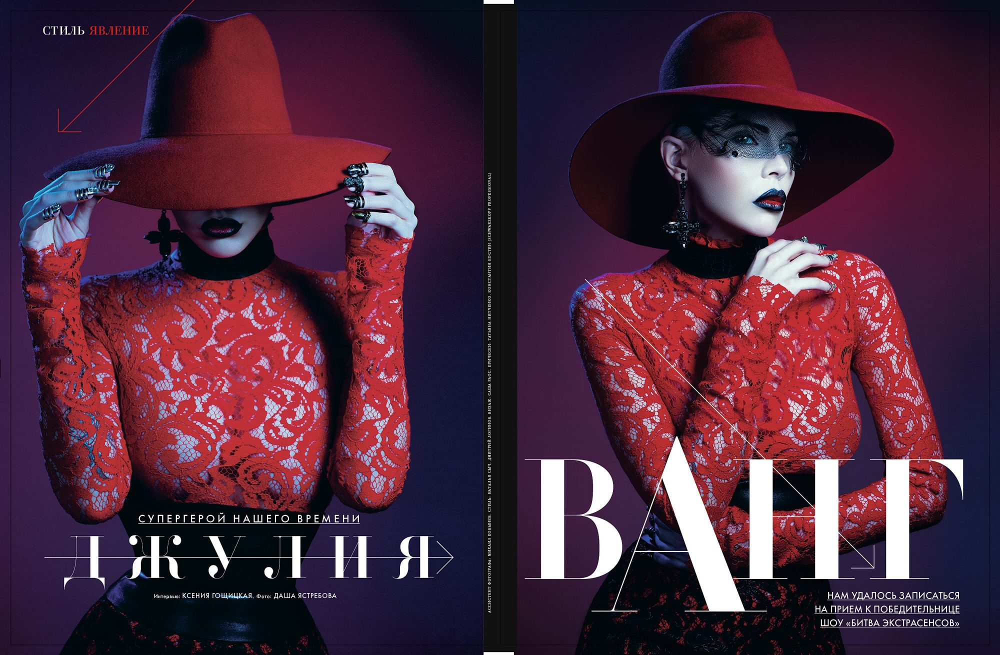
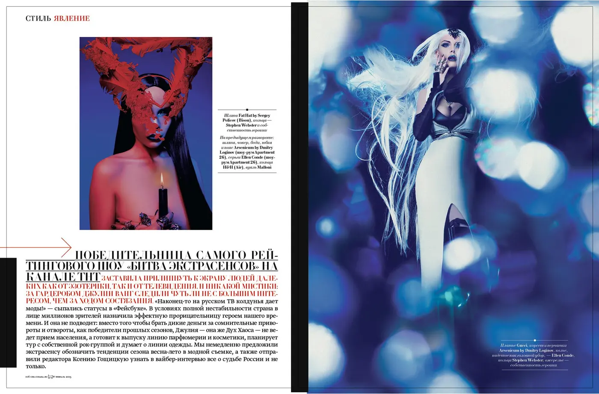
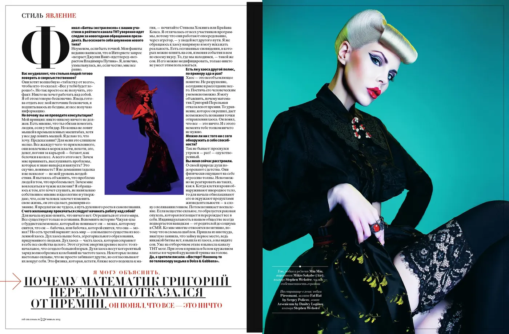

Style story for Sobaka magazine, St Petersburg, February 2015: Julia Vang, winner of “Battle of the Psychics”, as a superhero of our time. Interview by Ksenia Goshchitskaya.


I shoot covers and stories for magazines.
Working worldwide, remotely. Invoicing in USD or EUR.